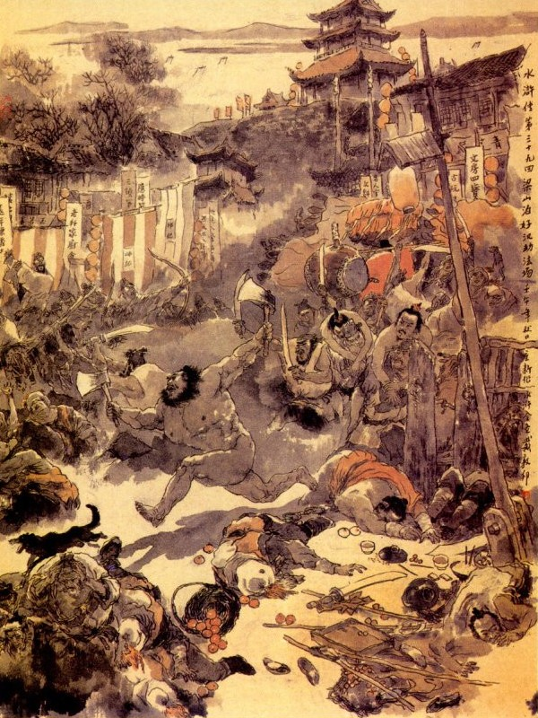

Bấy giờ, Tiều Cái cùng các vị Đầu Lĩnh đều ngơ ngác vội vàng, cùng túm nhau để hỏi xem lầm lỡ vì đâu? Quân Sư Ngô Dụng liền bảo mọi người rằng:
- Trong bức thư lúc nãy, vì chúng tôi vội vàng không kịp nghĩ cho đóng dấu khắc có bốn chữ "Hàn Lâm Xài Kính" như thế, quả nhiên Đới Tung bị nguy với Quan Tư, chứ không khi nào tránh khỏi.
Đại Kiện nói rằng:
- Cái đó chính là lối con dấu của Xài Thái Sư, vẫn dùng để đóng vào các văn trát xưa nay, không lẽ nào mà hỏng được.
Ngô Học Cứu nói:
- Cái đó các ông không biết. Xưa nay cha viết thư cho con không khi nào phải đóng dấu tên huý của mình, bởi vậy tôi chắc khi Đới Tung tới nơi, tất bị họ tra hỏi mà vỡ chuyện ra mất.
Tiểu cái lo sợ mà rằng:
- Nếu vậy ta nên cho hai người theo gọi về đây, để viết lại mới được.
Ngô Dụng cười rằng:
- Bây giờ theo thế nào được? Ông ta làm phép thần hành đi từ bấy đến, giờ có tới năm sáu trăm dặm rồi, còn ai theo kịp. Việc này tất phải kiếm cách cứu mau, không có thì nguy cả đến nơi.
Tiều Cái hỏi:
- Vậy quân sư định có cách gì để cứu?
Ngô Dụng ghé vào tai Tiều Cái mà hỏi rằng:
- Bây giờ phải thế này, thế này. Chủ tướng nên ám truyền hiệu lệnh cho các tướng đi mau mới được.
Tiều Cái nghe nói cả mừng, liền truyền lệnh cho các tướng, lập tức sắm sửa chu tất rồi cùng nhau xuống thuyền mà kéo sang Giang Châu. Bên kia Đới Tung đi ước chừng đúng hạn thì về đến đất Giang Châu liền đem thư vào trình với Xài Cửu Tri Phủ. Tri Phủ thấy Đới Tung về, trong bụng lấy làm vui mừng hớn hở, bèn thưởng cho ba cốc rượu rồi nói rằng:
- Ngươi vào đó có gặp Thái Sư không?
Đới Tung bẩm rằng:
- Chúng tôi vào đó có một tối rồi vội về ngay, nên không kịp gặp Ân Tướng.
Tri Phủ nghe nói liền bóc thư ra xem, thấy trên nói đã thu nhận đủ các đồ lễ vật rồi đoạn nữa nói chuyện Tống Giang, phải sai người lập tức đóng xe tù về kinh sư, giải về cho cẩn thận, còn đoạn cuối cùng nói đến Hoàng Văn Bính, nay mai sẽ tâu Thiên Tử, tất nhiên cũng có hồng ân. Tri Phủ xem xong cả mừng, lấy ra một đĩnh hai mươi nhăm lạng bạc thưởng cho Đới Tung rồi nhất diện sai đóng xe tù và bàn định chọn người để áp giải Tống Giang.
Đới Tung từ tạ Tri Phủ rồi trở ra mau mua các thức rượu thịt đem vào ngục thiết đãi Tống Giang và nói hết mọi chuyện cho Tống Giang biết. Cách hai hôm sau, Xài Tri Phủ đã thôi thúc đóng xe tù, vừa toan sai người khởi trình áp giải Tống Giang thì bỗng thấy nói có quan Thông Phán Hoàng Văn Bính vào hầu. Tri Phủ nghe nói, liền cho mời vào trong để nói chuyện.
Hoàng Văn Bính đưa tặng các đồ lễ vật, nịnh hót mấy câu, đoạn rồi cùng ngồi nói chuyện.
Tri Phủ bảo với Hoàng Văn Bính rằng:
- Tôi mừng cho ngài, nay mai, tất có việc vinh thăng tới nơi.
Hoàng Văn Bính hớn hở hỏi rằng:
- Sao Tướng Công lại biết trước?
- Hôm qua có người đem thư về, nói rằng tên Tống Giang thì cho giải vào kinh sư, còn Thông Phán thì thế nào cũng có thăng thưởng đến nơi, hiện có gia thư đó, Thông Phán xem qua thì biết đoan đích.
- Nếu thế thì toàn là ân đức của Tướng Công, chúng tôi biết lấy gì mà báo đền cho được. Nhưng nếu phải là gia thư thì khi nào tôi dám mạn phép mà xem như vậy?
- Được, Thông Phán với tôi là chỗ tâm phúc. Thông Phán cứ xem cho biết rõ. có hề chi?
Nói đoạn liền lấy thư đưa cho Hoàng Văn Bính xem. Hoàng Văn Bính cầm lấy thư xem hết đầu chí đuôi rồi xem đến ngoài phong bì thấy có dấu đóng ở đó vẫn còn mới mẻ sáng sủa thì lắc đầu mà bảo Thông Phán rằng:
- Phong thư này có lẽ không được đích thực.
Tri Phủ nói:
- Mọi khi không có đóng dấu bao giờ, nhưng hôm nay có lẽ là tiện có con dấu cho nên đóng vào đó hẳn?
Hoàng Văn Bính lại tán rằng:
- Tôi nói câu này, xin Tướng Công bỏ ngoài tai cho. Bức thư này tức là người man trá Tướng Công đây. Hiện nay thiên hạ thịnh hành bốn lối chữ, Tô, Hoàng, Mễ, Sài, vậy thì lối chữ của ân tướng Thái Sư, ai mà không viết giống. Còn như con dấu Hàn lâm này là khi còn làm chức Hàn Lâm, hay dùng để đóng vào giấy má, cho nên thiên hạ ai mà không biết. Đến như hiện nay ngài làm chức Thái Sư Thừa Tướng thì có khi nào lại còn dùng con dấu ấy nữa. Huống chi Tướng Công là chỗ con cháu trong nhà thì có cần chi phải cần đến con dấu có tên huý của ngài vào đây. Thái Sư là thực cao kiến viễn thức nhất trong thiên hạ, không lẽ ngài lại lầm đến thế? Xin Tướng Công cho đòi người đưa thư đến đây mà hỏi kỹ càng xem có gặp người nào ở trong Phủ Thái Sư không? Bằng lúng túng không trả lời được thì quả nhiên là giả mạo không sai. Cái đó Tướng Công nên cẩn thận.
Xài Tri Phủ nghe nói liền đáp rằng:
- Nếu vậy cũng không khó gì, anh ta từ nhỏ đến nay, chưa qua Đông Kinh một lượt nào, để ta hỏi qua mấy câu là biết được ngay.
Nói đoạn liền lưu Hoàng Văn Bính ngồi chơi ở đằng sau bình phong rồi cho gọi Đới Tung lên đến công đường. Xài Tri Phủ liền hỏi ngay rằng:
- Hôm nọ ngươi đi khó nhọc ta chưa kịp hỏi hết đầu đuôi trong phủ Thái Sư, vậy khi tới đó ngươi đi vào cửa nào?
Đới Tung bẩm rằng:
- Khi chúng tôi vào tới nơi thì trời đã nhá nhem tối cũng không trông rõ đó là cửa gì?
- Ở trong phủ có ai ra tiếp?
- Rồi sau nghỉ ở đâu?
- Bẩm, hôm đó chúng tôi đến trước phủ, tìm một người canh gác đưa thư vào, sau người canh gác trở ra nhận các lễ vật rồi bảo chúng tôi đi hàng trọ để nghỉ. Sáng hôm sau đầu trống canh năm, chúng tôi lại vào chực ở cửa phủ thì thấy tên người nhà đưa bức hồi thư ấy ra, chúng tôi sợ lỡ kỳ hẹn lập tức về ngay, không kịp hỏi han chi cả.
- Tên người nhà canh gác đó thế nào? Trắng hay đen, gầy hay béo, to lớn hay thấp lùn, có râu hay không?
- Bẩm, bấy giờ đường mờ tối, chúng tôi trông không được rõ lắm. Chỉ trông thoáng thấy anh ta tầm thước không lớn không bé, đã hơi có tuổi, loáng nhoáng vài cái râu.
Tri Phủ nghe đến đó quát lên rằng:
- Lính đâu! Trói cổ thằng này lại cho ta.
Vừa nói dứt lời thì lính tráng dạ vâng, đổ ra trói Đới Tung lại. Đới Tung lấy làm ngạc nhiên mà kêu lên rằng:
- Chúng tôi có tội gì?
Tri Phủ quát lên rằng:
- Tội mày đáng chết. nhà tao có lão họ Vương thì đã chết rồi, hiện nay có tên tiểu vương canh gác hãy còn trẻ tuổi, sao ngươi lại nói là đã nhiều tuổi và có râu. Vả chăng tên tiểu vương cũng không khi nào được vào phủ bao giờ, xưa nay phàm có thư tín ở các nơi đưa đến thì tất do qua tay Trương Cán Biện, đến tay Lý Đô Quản rồi mới vào đến trong phủ, vậy có nhanh ra cũng phải ba ngày mới lấy được hồi thư mang về. Huống chi ta đưa mấy hòm lễ vật như vậy, lẽ đâu lại không có ai là người ở trong nhà, ra hỏi cặn kẽ đầu đuôi mà lại nhận liều lĩnh thế được? Cái đó tất là ngươi man trá chi đây, muốn sống phải nói thực cho ta biết.
Đới Tung kêu lên rằng:
- Chúng tôi vì vội vàng, mong cho chóng việc, nên không kịp xét hỏi đầu đuôi, chứ thực có điều chi dám man trá.
Tri Phủ thét tả hữu mà rằng:
- Quân này gan tướng cướp đây, không tra tấn sao có chịu thú. Chúng đâu đem tra đánh xem sao?
Lính tráng nghe nói, biết chừng không thể nào nể được Đới Tung, liền vâng lời đem ra tra tấn. Đới Tung bị đòn vọt đau đớn, từ chối không xong, bất đắc dĩ phải tiêu xưng ra bức thư giả mạo. Tri Phủ quát hỏi rằng:
- Bức thư ấy ở đâu mà đến đây được?
Đới Tung nói rằng:
- Khi chúng tôi đi qua đất Lương Sơn, bị bọ cướp bắt lên núi, sau chúng lần được bức thư, liền cướp lấy cả hai hòm châu báu rồi tha cho về. Chúng tôi biết thế trở về không được, đã toan liều tử tử ngay, song họ nhất định giữ gìn cẩn thận rồi viết phong thư ấy mà bắt phải đem về. Nhân chúng tôi cũng sợ quở phạt đến thân, cho nên phải mạn phép Ân Tướng mà nói liều như vậy, xin Ân Tướng xét cho.
Tri Phủ nói:
- Việc đó chắc là man trá không sai, vậy tất nhiên còn có tính gì khác, ngươi phải nói cho rõ. Ta quyết rằng ngươi thông đồng với bọn Lương Sơn để cướp hai hòm châu báu của ta, muốn sống phải thú mau mới được. Chúng đâu đánh nữa cho ta xem.
Đới Tung bị tra khảo lần nữa, song chàng nhất định đau mà không dám đem chân tình ra thổ lộ. Tri Phủ tra hỏi hồi lâu, thấy lời lẽ trước sau như một, liền bất đắc dĩ sai đóng gông Đới Tung mà cho giam xuống ngục.
Khi tra hỏi xong rồi. Tri Phủ liền vào nhà trong cảm tạ Hoàng Văn Bính mà rằng:
- Việc này nếu không có Thông Phán chỉ giáo cho thì tất là nguy hiểm chứ không chơi.
Hoàng Văn Bính lại nói với Tri Phủ rằng:
- Người ấy chắc là thông đồng với bọn Lương Sơn Bạc để mưu việc phản nghịch, vậy nếu không sớm liệu trừ đi thì tất là sinh sự về sau.
Tri Phủ nói:
- Bây giờ chỉ đem hai thằng ấy kết án mà xử tử ngay đi rồi sẽ biểu tấu triều đình mới được.
- Tướng Công nghĩ thế thực phải lắm làm như vậy một là triều đình cũng biết được tài mẫn cán của Tướng Công, hai là bọn Lương Sơn khỏi đến đây để cướp ngục thì tất nhiên khỏi sinh nhiễu loạn về sau.
- Vâng, việc đó tôi phải biểu tấu triều đình rồi xin để bảo cử cho Thông Phán một thể.
Hoàng Văn Bính nghe nói cả mừng, so vai rụt cổ nịnh hót một hồi lâu mới đứng lên từ tạ ra về.
Gớm quân khốn nạn đê hèn,
Tài thua sức kém còn ghen ghét người.
Rồi đây lay đất chuyển trời.
Tiền nhân phổng thoát với đời được chăng?
Mấy hôm sau, Tri Phủ gọi người Khổng Mục là người làm văn án lên, truyền lập án Tống Giang cùng Đới Tung, để đến ngày sau nữa đem ra chém. Người Khổng Mục này là một người họ Hoàng, vốn thân mật với Đới Tung xưa nay, song cũng không có cách gì cứu gỡ cho được, liền bẩm với Tri Phủ rằng:
- Ngày mai là ngày kỵ nhật của quốc gia, ngày kia là ngày tết Trung Nguyên rằm tháng Bảy, đều không nên hành hình cả, đến ngày thứ ba cũng là ngày cảnh mệnh của nhà nước, vậy thì để năm hôm nữa thì mới có thể thi hành được. Tri Phủ nghe nói cũng cho là phải, liền theo lời Khổng Mục mà để đến sáu hôm sau.
Sáng sớm hôm thứ sáu, Tri Phủ sai quét dọn pháp trường, ở sau con đường chữ thập rồi kiểm điểm bộ binh cùng các tay đao trượng, ước hơn năm trăm người, đều tề tựu ở trước nơi nhà ngục. Vào khoảng giờ Tỵ hôm ấy, ngục quan vào bẩm với Tri Phủ để ra giám trảm. Hoàng Khổng Mục đem bản án lên trình quan Phủ rồi viết hai chữ "Trảm" rất to mà niêm yết ra ngoài pháp trường. Bấy giờ các Tiết Cấp và cùng Lao Tử ở đất Giang Châu, ai cũng lấy làm phàn nàn thương tiếc cho Đới Tung mà không còn kế chi cứu được. Khi các công việc sửa soạn xong, lệnh quan trên bắt Tống Giang, Đới Tung đem búi ngược tóc lên, cắm bông hoa giấy đỏ lên đầu, dắt đến trước mặt thân án, cho mỗi người ngồi ăn bát cơm từ giã với đời rồi sáu bảy mươi tên ngục tốt cùng dong ra ngoài pháp trường.
Bấy giờ nhân dân ở đất Giang Châu, kéo đàn kéo lũ đi xem, không biết mấy ngàn người mà kể. Chúng dong phạm nhân ra đến pháp trường rồi đặt Tống Giang ngồi quay mặt sang Nam, Đới Tung ngồi quay mặt sang Bắc, để đợi đến giờ Ngọ là quan giám trảm. Bọn nhân dân kéo đi xem, ngửa trông thấy trên bản án viết có mấy câu rằng:
- "Phủ Giang Châu xử hai tên phạm; Một tên là Tống Giang ngâm thơ phản nghịch, kết bọn Lương sơn để gây một đường rối loạn, tội nên xử trảm. Một tên là Đới Tung, thông với Tống Giang, đưa thư cho bọn Lương Sơn Bạc để mưu phản lại triều đình, tội nên xử tử. Giám trảm quan là Xài mỗ, Tri Phủ Giang Châu".
Được một lát Tri Phủ cỡi ngựa ra đứng ở pháp trường, để đợi báo đúng giờ là truyền cho hạ thủ. Chợt đâu thấy bên đông pháp trường có bọn ăn mày chen vào xem chém, tụi thổ binh ngăn cản không xong, đôi bên liền ầm ĩ cả lên.
Đương khi ấy thì phía bên tây lại có bọn bán thuốc cao len vào. Bọn thổ binh thấy vậy quát lên rằng:
- Chúng bây người ở đâu? Có biết gì không? Ai cho phép len vào đây để xem?
Lũ đánh gậy bán thuốc cao đáp lên rằng:
- Chúng tôi đây đến phủ huyện nào mà không vào xem được. Dẫu cho Thiên Tử chém người cũng còn cho người dân vào xem, huống chi một chỗ đất cỏn con này mà lại không vào xem được hay sao?
Giám Trảm Quan nghe thấy vội quát lên rằng:
- Đuổi chúng nó ra, không cho chen vào đấy.
Chưa dứt lời thì đã thấy phía bên Nam pháp trường có một bọn phu gánh cũng sấn sỉ mà cùng nhau chen vào. Lũ thổ binh quát hỏi rằng:
- Chúng bây người ở đâu? Mà dám chen vào đây?
Bọn phu gánh đáp rằng:
- Chúng tôi gánh các đồ vật, để đưa cho Tri Phủ Tướng Công đây.
Bọn thổ binh ngăn lại mà rằng:
- Có phải là người nhà quan Phủ thì bây giờ cũng không đi qua đây được.
Bọn phu gánh thấy vậy, liền hạ gánh xuống rồi đứng len lỏi vào trong đám đông người để xem. Chợt đâu thấy phía Bắc, có một đám buôn, kéo hai xe gỗ đến, đẩy xô mọi người mà toan vào pháp trường. Tụi thổ binh thét mắng đuổi ra mà rằng:
- Các anh đi đâu thế này.
Lũ lái buôn đáp rằng:
- Chúng tôi phải đi có việc cần, xin các ông cho phép chúng tôi đi qua đây.
Lũ thổ binh lại quát mắng rằng:
- Các anh nói lạ, ai cho các anh đi lối này? Có vội kiếm lối khác mà đi.
Bọn lái buôn cười rằng:
- Các bác nói dễ nghe chưa? Chúng tôi ở Kinh Sư đến đây, còn biết lối cóc nào nữa? Chỉ có một con đường lớn này phải cho đi mới được.
Nói xong toan chen lấn đi vào, song bọn thổ binh nhất định không nghe mà cố dồn để đuổi ra. Đám lái buôn bất đắc dĩ phải dừng xe lại rồi trèo lên xe để xem. Được một lát, trong pháp trường có người báo lên rằng:
- Bây giờ đúng giờ Ngọ ba khắc rồi.
Giám Trảm Quan nghe báo, liền truyền lệnh rằng:
- Cho phép chém.
Bọn lính coi tù vâng lệnh tháo gông cho tội nhân rồi hai người hành hình cầm đao ra để chém. Bấy giờ bọn lái buôn đứng trên xe kia, nghe thấy ba tiếng "Cho phép chém", một người thì lấy thanh la ở trong bọc ra mà đánh lên mấy tiếng rất to rồi bỗng dưng tứ phía đều nhao nhao lên như vỡ chợ vậy. Đoạn rồi ở trên gác hàng nước, bên cạnh con đường Thập Tự, có một anh chàng cởi trần trùng trục, mình đen chùi chũi, tay cầm hai cây búa, thét lên một tiếng như sấm động vang trời mà nhảy ngay xuống pháp trường, vung cái búa lên chém luôn hai người hành hình rồi quay ra đuổi chém Giám Trảm Quan. Bọn thổ binh thấy vậy, vội vàng xô nhau để ngăn cản, song không sao mà chống cự cho nổi, chúng liền hớt hơ hớt hãi túm đến cứu Giám Trảm Quản là Xài Tri Phủ để chạy trốn cho mau.
Khi đó lũ ăn mày ở phía Đông, đều tuốt dao nhọn ở trong mình ra, để đánh giết thổ binh. Phía bên Tây, tụi đánh gậy bán thuốc cao, đám phu gánh bên Nam cũng múa đòn gánh lên, gặp ai thì phang cho người ấy làm cho bọn lính ngục và thổ binh ngã chết không biết bao nhiêu mà kể. Còn bọn lái buôn ở phía Bắc thì nhảy xuống xe, quay xe ngăn lấy lối đi rồi hai anh xông vào cướp lấy Tống Giang cùng Đới Tung, còn bọn người thì hoặc bắn cung, hoặc ném đá, hoặc đánh gươm giáo mà giết hại thổ binh chết như canh hẹ.
Nguyên bọn lái buôn này là Tiều Cái, Hoa Vinh, Hoàng Tín, Lã Qương, Quách Thịnh. Bọn phu đánh gậy bán thuốc cao là Yến Thuận, Lưu Đường, Đỗ Thiên, Tống Vạn. Bọn phu gánh là Chu Quý, Vương Nụy Hổ, Trịnh Thiên Thọ, Thạch Dũng. Và bọn ăn mày kia là Nguyễn Tiểu Nhị, Nguyễn Tiểu Ngũ, Nguyễn Tiểu Thất cùng Bạch Thắng, cộng tất cả là mười bảy vị Lương Sơn Bạc, hơn một trăm lâu la giả dạng làm các hạng người mà đánh cướp pháp trường ở đó.

Khi ấy Tiều Cái trông thấy anh chàng đen lớn; vác hai cây búa xông pha tả hữu, đánh giết ầm ầm thì trong bụng lấy làm ngờ ngợ, không biết là ai. Sau lại nhớ ra khi trước Đới Tung thường nhắc đến tên anh Hắc Toàn Phong Lý Quỳ, đi lại với Tống Giang rất là thân ái, liền hỏi to lên rằng:
- Hảo hán kia có phải là Hắc Toàn Phong đó chăng?
Anh chàng kia không trả lời, cứ lẳng lặng vác hai cây búa mà chém giết loang loáng như sét đánh ngang trời. Tiều Cái biểu hai người cõng Tống Giang cùng Đới Tung phải theo sau anh chàng to lớn ấy mà chạy.
Đương lúc bấy giờ, trên con đường chữ Thập kia, vô luận là quân dân lính tráng, hoặc người bị thương, hoặc người bị giết, nằm vật ngổn ngang không biết tới đâu mà kể. Còn bọn đàn anh và tụi lâu la kia, đều theo anh chàng đen lớn mà chạy ra ngoài thành và để cho bọn Hoa Vinh, Hoàng Tín, Quách Thịnh, bốn người cầm bốn tay cung đi sau mà bắn chặn lấy đường; khiến cho quân dân ở đất Giang Châu không có ai dám gan theo đuổi. Khi đó chàng đen lớn kia, vừa đi vừa chém, máu me đầm đìa khắp cả chân tay mà vẫn còn hăng hái chém giết. Tiều Cái liền cầm đao thét lên rằng:
- Đại Hán kia, không can thiệp gì đến nhân dân, không được chém người ta nữa.
Anh chàng kia im lặng không thèm nghe đến, cứ phăm phăm múa đôi đại phủ mà chém rẽ người ta để đi. Ước chừng đi được bảy tám dặm đường thì có một giải trường giang chắn ngang trước mặt, Tiều Cái lấy làm lo sợ, không còn biết lối nào mà chạy trốn cho thoát. Bấy giờ anh chàng đen lớn kia nói lên rằng:
- Không ngại gì hãy đem Ca Ca vào trong miểu kia đã. Chúng nghe nói, liền kéo nhau để xem, thấy bên sông có một tòa cổ miếu, hai bên cửa vẫn đóng chặt. Chàng đen lớn kia vác đôi phủ, đến chém phá tung cửa ra cho mọi người vào. Khi vào tới nơi, thấy thông xanh liễu tốt cây cỏ um tùm, trước cửa có cái biển thiếp vàng bốn chữ "Bạch Long Thần Miếu" rất to, bọn tiểu lâu la cõng Tống Giang cùng Đới Tung đặt nghỉ ở đó. Lúc ấy Tống Giang mới mở mắt ra, trông thấy Tiều Cái cùng mọi người thì gạt hai hàng lệ mà nói rằng:
- Chẳng hay là gặp nhau trong giấc chiêm bao?
Tiều Cái an ủi Tống Giang mà rằng:
- Đó chẳng qua nhân huynh không chịu ở sơn trại, cho nên mới xảy ra như vậy. Song không biết rằng anh chàng đen lớn ra sức cứu giúp kia là ai?
Tống Giang đáp rằng:
- Ấy chính là Hắc Toàn Phong Lý Quỳ đấy, anh ta đã mấy lần xui tôi vượt ngục mà ra, song tôi sợ không sao mà chạy thoát được, nên không dám nghe lời.
Tiều Cái kính phục mà khen rằng:
- Được một người cố công ra sức, không ngại búa rìu can đảm như thế, thực là hiếm có.
Hoa Vinh liền bảo chúng lấy quần áo đưa cho Tống Giang và Đới Tung mặc rồi cùng ngồi bàn định với nhau. Đương khi ấy trông thấy Lý Quỳ tay cầm đôi phủ, ở dưới hành lang chạy lên, Tống Giang liền gọi mà hỏi rằng:
- Anh em đi đâu thế?
Lý Quỳ đáp rằng:
- Tôi đi tìm thằng coi miếu để giết nó đi một thể, nó làm cái gì mà ban ngày ban mặt cũng cứ đóng cửa, không biết rằng nó trốn đi đâu mà tìm mãi không thấy?
Tống Giang gạt đi mà rằng:
- Ngươi hãy đến đây để chào các Ca Ca Đầu Lĩnh đã.
Lý Quỳ nghe nói, liền vứt đôi phủ xuống mà quay mặt vào Tiều Cái rồi quỳ vội mà rằng:
- Xin Ca Ca chớ cười Thiết Ngưu này lỗ mãng.
Nói đoạn lại quay ra chào hỏi mọi người và nhận được Chu Quý là người đồng hương thì đôi bên lấy làm hoan hỷ vô cùng. Bấy giờ Hoa Vinh nói với mọi người rằng:
- Vừa rồi Ca Ca truyền lệnh cho anh em cứ theo Lý Ca mà chạy, vậy bây giờ đến đây trước mặt có con sông ngăn trở mà thuyền bè không có thì đi làm sao được?
Lý Quỳ ứng lên rằng:
- Cái đó không cần, tôi với các bác, ta hãy kéo cả vào thành, tìm thằng Xài Tri Phủ mà giết phăng nó đi rồi sẽ liệu.
Đới Tung vội ngăn rằng:
- Làm như thế không được, trong thành có tới bảy tám trăm quân, nếu mình sấn vào thì lỡ ra nguy mất.
Nguyễn Tiểu Ngũ nói lên rằng:
- Ở bến sông xa kia có mấy chiếc thuyền để anh em tôi lội sang cướp đem về đây mà chở người vào thành thì có lẽ tiện hơn.
Tiều Cái khen phải mà rằng:
- Nếu thế thì còn gì hơn nữa. Nói đoạn thì ba anh em họ Nguyễn cởi trần cầm đao, nhảy xuống sông mà bơi cướp lấy thuyền.
Ba người lội dưới sông thì thấy mấy chiếc thuyền kia thổi còi lên hiệu mà kẽo kẹt chèo thuyền, thấy mỗi thuyền, mỗi người cầm một thứ binh khí trong tay hết thẩy. Chúng thấy thế, đều kinh ngạc mà nhao nhao cả lên. Tống Giang nghe thấy chúng kinh hãi thì cũng than thân gặp bước cùng đường, bèn chạy ra trước cửa miếu bên sông, nom thấy một đại hán đứng ở trên thuyền, tay cầm binh khí mặc giáp có kính đỏ, yểm tâm, coi rất hùng dũng, thổi sáo mà tới. Tống Giang nom xem nhận ra là Trương Thuận, bèn vẫy tay gọi.
- Anh em đến cứu tôi với!
Trương Thuận biết là Tống Giang gọi đến, liền chèo thuyền nhanh tới bờ. Ba anh em họ Nguyễn lui bước lại rồi lũ Trương Thuận lên tới miếu. Tống Giang đón tiếp. Trương Thuận dẫn đến mươi người khỏe mạnh ở dưới thuyền lên. Lại thấy cả Trương Hoành, dẫn Mục Hoằng, Mục Xuân và Tiết Vĩnh và một số trang khách ở dưới thuyền lên. Đến chiếc thuyền thứ ba, thấy Lý Tuấn, dẫn Lý Lập, Đồng Uy, Đồng Mãnh và mươi người trang khách khỏe mạnh, đều cầm thương gậy lên bờ. Trương Thuận gặp được Tống Giang lấy làm mừng rỡ, khóc mà sụp lạy nói rằng:
- Từ khi nghe tin Ca Ca bị bắt, khiến tôi ngồi đứng không yên mà không còn cách nào cứu được. Lại nghe cả Đới Viện Trưởng cũng bị giam giữ mà tôi tìm Lý Đại Ca cũng chả thấy đâu. Sau chúng tôi đến nhà Mục Thái Công, rủ những anh em quen biết, đem số trang khách, để phá ngục Giang Châu cứu lấy Ca Ca và Đới Viện Trưởng.
- Nào ngờ nhân huynh đã được các vị hào kiệt cứu ra, còn họp ở chốn này, vậy dám hỏi các vị hảo hán đây có phải là những nghĩa sĩ của Tiểu Thiên Vương ở Lương Sơn Bạc chăng?
Tống Giang bèn trỏ vào Tiều Cái mà giới thiệu rằng:
- Đây là Tiều Thiên Vương Ca Ca, cùng các vị nghĩa sĩ, vậy xin các anh em hãy vào trong miếu, để cùng nhau gặp mặt.
Bấy giờ lũ Trương Thuận chín người, lũ Tiều Cái mười bảy người và Tống Giang, Đới Tung, cùng Lý Quỳ, cộng tất cả hai mươi chín người, đều hội họp ở Bạch Long miếu. Sau khi hai mươi chín vị làm lễ ra mắt nhau; thì tiểu lâu la vào miếu báo rằng:
- Nay thành Giang Châu, khua chiêng dóng trống, cờ xí rợp trời, sửa soạn binh mã đuổi theo để đánh, gần tới miếu Bạch Long, việc nguy cấp lắm.
Lý Quỳ nghe nói, thét lên một tiếng, cầm hai đại phủ mà đi, ra khỏi cửa.
Tiều Cái gọi lại nói rằng:
- Nếu muốn rửa hận giết đám tham tàn thì Tiều Cái xin cùng các vị hảo hán, cùng nhau ra sức giết lũ quan quân, mới trở về Lương Sơn Bạc.
Chúng anh hùng đều nói lên: - Theo lệnh.
Lúc ấy một trăm năm mươi người đón đánh quan quân thành Giang Châu, khiến cho máu chảy đầy sông, xương phơi khắp chốn. Thực là:
Anh hùng mới thực anh hùng,
Đất bằng nổi sóng đùng đùng bởi đâu?
Quyền môn muốn những đè đầu,
Ngán lời cẩu trệ vuốt râu báo hùm!
Lời bàn của Thánh Thán
Theo phép nhà văn tả việc gấp, không thể dài lời nhiều bút, vì dùng nhiều bút thì việc thấy hoãn đi không còn gấp nữa. Thế mà sách này không thế, tả việc gấp, vẫn dùng nhiều bút mực với nhiều lời, vì rằng dùng ít bút mực thì việc gấp giải đi. Đây tả việc gấp vẫn nhiều lời, toàn là những lời của việc gấp, như con người mưu nghịch Tống Giang, Đới Tung quyết không đợi mãi, dẫu được Hoàng Khổng mục kéo dài ra năm ngày, cho đến ngày cuối cùng, đã thành mây cùng nước tận, bấy giờ chỉ đợi đến giờ Ngọ ba khắc thì phải khai đao thì phải kết thúc.
Thế mà đoạn văn ấy tả ra, nào là buổi sáng ăn cơm sớm rồi sửa soạn pháp trường, nào là thổ binh mang khí giới chỉnh tề, đến giờ Tỵ ngục quan bẩm trình quan Giám Trảm, Khổng Mục cũng trình mọi công việc tới kỵ Nào là tả Tống Giang, Đới Tung xõa tóc cắm bông koa giấy, trước khi xử trảm cho uống rượu, ăn cơm bữa cuối cùng từ giã cõi đời. Nào là số sáu bảy mươi kẻ ngục tốt, đều đổ cả ra. Rồi lại tả trên đường Thập Tự giáo mác chung quanh, một kẻ quay mặt về Nam, một kẻ quay mặt về Bắc, để đợi Giám Trảm Quan đi tới. Nào tả số người ra vào chen xem, chưa thấy quan Giám Trảm tới. Trước khi đó tuyên án xử trảm hai người, tên mỗ vì phạm tội này, theo luật phải xử trảm. Tên mỗ vì phạm tội này, theo luật phải xử trảm. Một lát sau Quan Phủ tới, dừng ngựa lại đợi đến giờ Ngọ ba khắc thì xử trảm. Quan Giám Trảm đã tới, chỉ đợi đến giờ, khiến độc giả xem tới ba chữ "Ngày thứ sáu" phải đến khiếp lên, đọc một câu thấy khiếp một câu, đọc một chữ mà kinh một chữ. Đoạn văn có tả kỹ càng như thế làm sống lại cảnh kinh người, mới thấy đoạn văn sau biến ra kỳ tuyệt. Hồi này rất khéo, ở chỗ tới ngày mai xử quyết như sấm nhanh không kịp bịt tai. Thế mà bây giờ đã có người báo cho Sơn Bạc, há phải tới nơi không phép rút đường. Nào ai biết hai người có tình phận với Lương Sơn Bạc, nay ở hồi trước Ngô Dụng đã dự đoán việc sai lầm, vội vàng trao kế cho đám hảo hán hạ sơn, khi đi đường vài ngày thì vừa gặp Khổng Mục xin hoãn được năm ngày, khiến mấy đám tới nơi, đến thời vừa việc, đã nên khéo léo! Lại tả sau khi việc Đới Tung lộ ra, không nói đến hai tay Lý Quỳ, Trương Thuận, chả những không thấy, còn chép thêm mọi người (đám ngục tù và người quen thuộc) thương xót, cho thấy khác đi, khiến độc giả cũng thêm buồn, tới khi đọc đến chàng đại hán đen chũi to lớn, chẳng ngờ khiếp vía sởn gai. Và sau Trương Thuận chèo thuyền đi đến, lại làm cho người ta không mơ tưởng tới, mới thấy rõ kỳ văn.